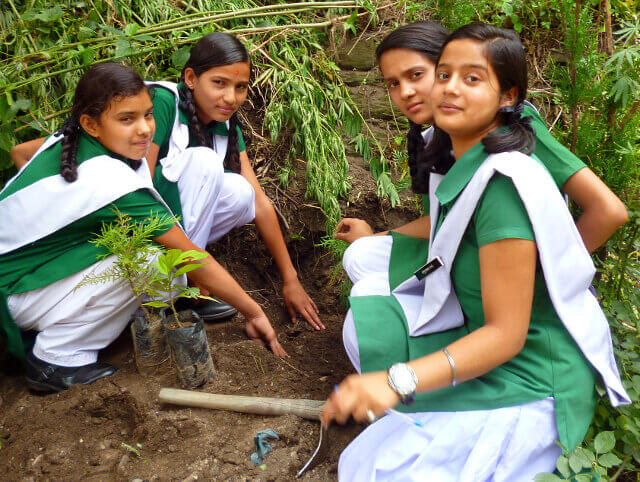

Our Goals
We do whatever is in our power to protect the environment of the mountains we live in so that present and future generations can enjoy their natural beauty, wonderful climate and abundant resources. We are trying to limit the damage to Nature caused by people. We are concerned about the disappearance of forests, the depleting biodiversity, the loss of natural habitats for wild animals, the drying up of mountain springs, the pollution of rivers with sewage, non-biodegradable waste being dumped on hillsides and along pathways, the chemicals used to grow our food, public health, the loss of traditional livelihoods and about the big threats of global warming and climate change. We believe that concerted and far-sighted action is required by government and citizens together to save the Himalayan region and that youth should be the motor of the change that is needed.
Our first priority is to introduce environment-friendly solid waste management by applying the three ‘R’s - Reduce, Reuse, Recycle. We are promoting segregation of waste at source, door-to-door collection of it, decentralised composting of green waste, recycling of inert materials and controlled incineration of hospital and insanitary waste. We want to put a stop to littering, dumping and open burning of waste through creating awareness, offering community-based alternatives and demanding the imposition of fines on those who violate the rules.
We intend to clear the waste thrown into naulas, the mountain springs with which Almora was doted. Only a few of the over 300 still remain. With help from those who depend on these water sources, we intend to build a structure around them that keeps the water clean and makes it easily accessible. Our clean-up operations will concentrate on removing waste from slopes near streams and rivers so that garbage does not wash into them during the monsoons. We will demand strict enforcement of rules concerning sewage and waste water treatment and promote cost-effective ways of cleaning waste water before it enters ponds, lakes or streams.
- 
We are investigating the nutritional and medicinal value of various mountain herbs and plants with a view to multiplying and processing them as a source of livelihood for our farmers.With the help of the Department of Forests and the Indian Army Eco-Battalion 130, we are doing tree planting of local, broad-leafed species like oak that retain underground water and kafal that provide food for birds and wild animals.
We are raising awareness about the long-term negative effects on the soil and on health of using chemical inputs for food crops.We provide technical expertise for organic farming and an alternative to chemical fertilisers through the composting of green waste.